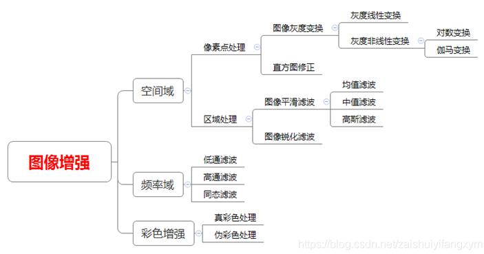
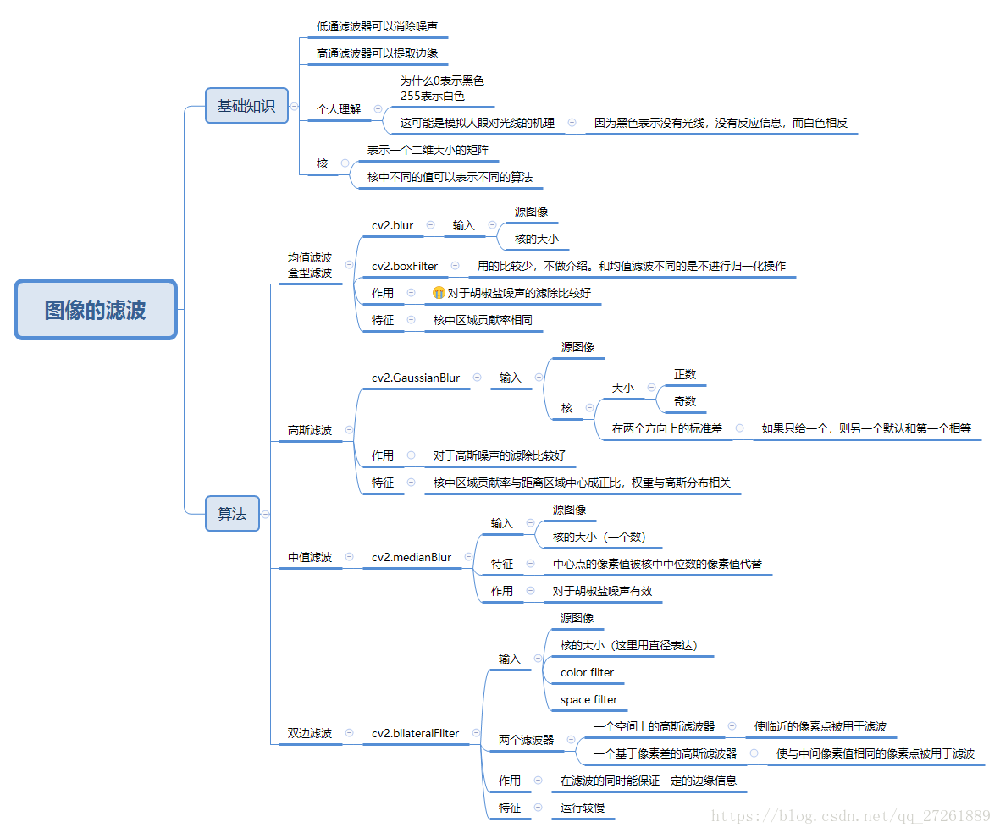
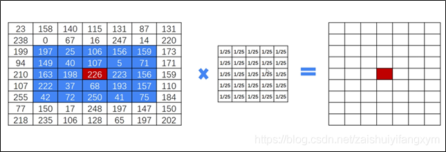
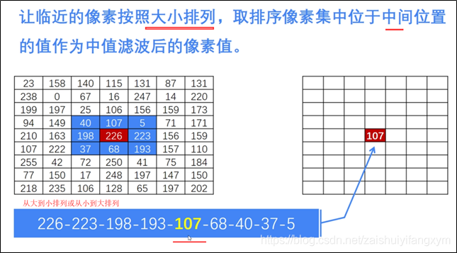
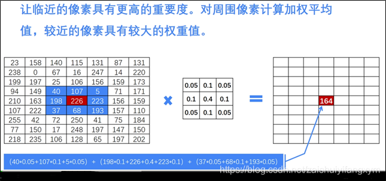
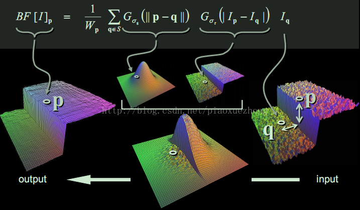
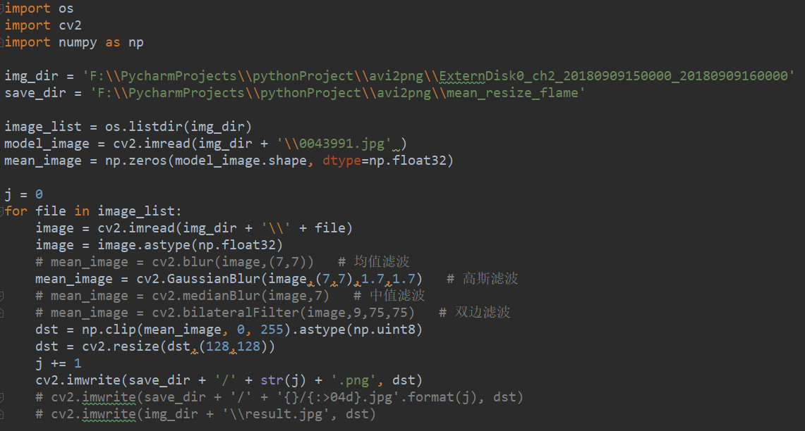
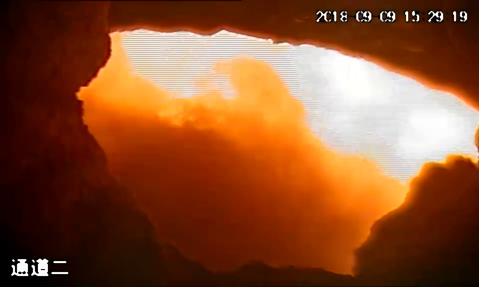
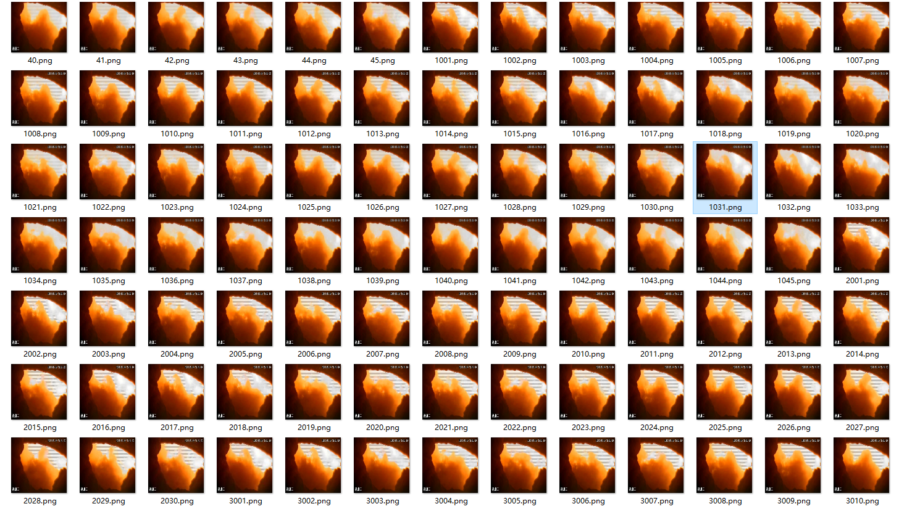

平滑滤波处理火焰图像数据
1 实验目的
- 消除图像在数字化过程中产生或者混入的噪声，即消除闪烁对摄像机成像的影响。
2 理论基础
图像平滑 图像增强是对图像进行处理，使其比原始图像更适合于特定的应用，它需要与实际应用相结合。对于图像的某些特征如边缘、轮廓、对比度等，图像增强是进行强调或锐化，以便于显示、观察或进一步分析与处理。图像增强主要是一个主观过程，而图像复原大部分是一个客观过程。图像增强的方法是因应用不同而不同的，研究内容包括：

Figure 1: 图像增强
图像平滑是一种区域增强的算法，平滑算法有邻域平均法、中指滤波、边界保持类滤波等。在图像产生、传输和复制过程中，常常会因为多方面原因而被噪声干扰或出现数据丢失，降低了图像的质量（某一像素，如果它与周围像素点相比有明显的不同，则该点被噪声所感染）。这就需要对图像进行一定的增强处理以减小这些缺陷带来的影响。图像平滑主要有均值滤波、高斯滤波、中值滤波和双边滤波等。

Figure 2: 图像滤波
均值滤波 均值滤波是指任意一点的像素值，都是周围 N*M 个像素值的均值。例如下图中，红色点的像素值是其周围蓝色背景区域像素值之和除 25， 25=5*5 是蓝色区域的大小。

Figure 3: 均值滤波算法
中值滤波 在使用邻域平均法去噪的同时也使得边界变得模糊。而中值滤波是非线性的图像处理方法，在去噪的同时可以兼顾到边界信息的保留。选一个含有奇数点的窗口 W ，将这个窗口在图像上扫描，把窗口中所含的像素点按灰度级的升或降序排列，取位于中间的灰度值来代替该点的灰度值。计算过程如下图所示：

Figure 4: 中值滤波算法
高斯滤波 为了克服简单局部平均法的弊端(图像模糊)，目前已提出许多保持边缘、细节的局部平滑算法。它们的出发点都集中在如何选择邻域的大小、形状和方向、参数加平均及邻域各店的权重系数等。图像高斯平滑也是邻域平均的思想对图像进行平滑的一种方法，在图像高斯平滑中，对图像进行平均时，不同位置的像素被赋予了不同的权重。高斯平滑与简单平滑不同，它在对邻域内像素进行平均时，给予不同位置的像素不同的权值。高斯滤波让临近的像素具有更高的重要度，对周围像素计算加权平均值，较近的像素具有较大的权重值。如下图所示，中心位置权重最高为0.4。

Figure 5: 高斯滤波算法
双边滤波 双边滤波器的优点是能够做边缘保存，一般过去用的维纳滤波或者高斯滤波去降噪。都会较明显地模糊边缘，对于高频细节的保护效果并不明显。双边滤波器顾名思义比高斯滤波多了一个高斯方差 sigma－d ，它是基于空间分布的高斯滤波函数。所以在边缘附近，离的较远的像素不会太多影响到边缘上的像素值，这样就保证了边缘附近像素值的保存。

Figure 6: 双边滤波算法
p点是掩膜中心（黄色圈圈），q点是邻域内某点（白色圈圈），生成了两个核函数，一个空间域高斯核，一个值域高斯核，然后相乘得到最终核函数，对输入进行卷积或相关，得到输出，从图中可以看出，边缘得到了很好的保持，噪声也被抑制。
3 数据来源
- 火电厂视频数据截取的火焰图像。
4 实验步骤
均值滤波 Python调用OpenCV实现的函数如下：
result = cv2.blur(原始图像, 核大小)
其中，核大小是以（宽度，高度）表示的元组形式。常见的形式包括：核大小（3，3）和（5，5）。 代码如下：

Figure 7: 具体代码
中值滤波 Python调用OpenCV实现的函数如下：
dst = cv2.medianBlur(src, ksize)
其中，参数：src 表示源图像；ksize 表示核大小。核必须是大于1的奇数，如3、5、7等。
高斯滤波 Python调用OpenCV实现的函数如下：
dst = cv2.GaussianBlur(src, ksize, sigmaX)
其中，参数：src 表示原始图像；ksize 表示核大小；sigmaX 表示X方向方差。 注：核大小（N, N）必须是奇数，X方向方差主要控制权重。sigmax = 0.3*[(ksize-1)*0.5]+0.8 。
双边滤波 Python调用OpenCV实现的函数如下：
dst = = cv2.bilateralFilter(src, d, sigmaColor, sigmaSpace[, dst[, borderType]])
其中，src：输入图像；d：过滤时周围每个像素领域的直径；sigmaColor：在color space 中过滤 sigma。 参数越大，临近像素将会在越远的地方 mix；sigmaSpace：在coordinate space 中过滤 sigma。 参数越大，那些颜色足够相近的的颜色的影响越大。
5 结果分析与讨论
Figure 8: 原始图像
经滤波后的运行结果如下：
均值滤波
中值滤波

高斯滤波
双边滤波
Figure 9: d=9
滤波后的图片resize为符合模型特性的长宽相等的正方形图片：

Figure 10: resize: 128*128*3
6 结论
- 线性滤波随着核大小逐渐变大，图像变得更加模糊，但均不丢失图像的关键信息。
- 用cv2.resize()函数将滤波后的图片转化为正方形图片时，图片噪声较大。采用k=7的高斯滤波时，图片噪声明显减小。